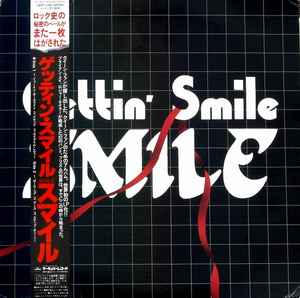
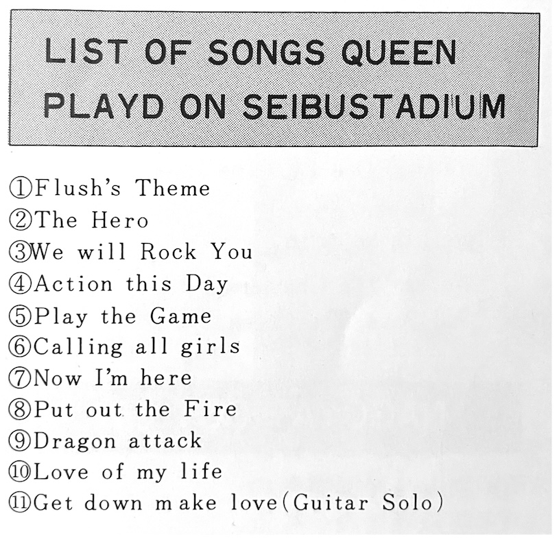

This issue was the first to come out after Queen's 1982 Japan tour ended, and there are pictures and info from their trip, setlists for each show, and concert impressions from fans, which are all quite positive even though the band was going through a lot of inner turmoil and felt burnt out at this point. Even the fanclub editor comments that Queen's ability to draw crowds had diminished a bit from their heydays. After this tour the band would take all of 1983 off, not going back out on the road until 1984.
The second part of Shadow Queen's "My Collection, My Queen" is featured, containing tour pamphlets from around the world and a few rare vinyls such as white label promo releases and the uK single version of The Seven Seas of Rhye, which was highly sought-after in Japan due to its B-side See What A Fool I've Been having not yet seen release there.

There's also a blurb regarding the September release of Gettin' Smile, a Japan-only vinyl of songs from Smile, Queen's precursor band. The tracks were cut in the late 60s but were ultimately never given official release at that time. There's no info on how exactly it came to be, but it's noted that Gettin' Smile was released to commemorate Queen's tenth anniversary, and that when Brian was notified of this release he expressed surprise but ultimately gave his blessing. For years, Gettin' Smile was the only legitimate release of these tracks until 1997 when they saw a Dutch CD release as Ghost of a Smile. Of course, all of these tracks are easily found online today.

Flush...Ahhhh...
The fanclub staff must've scrambled to put this issue out—there are an insane amount of typos.